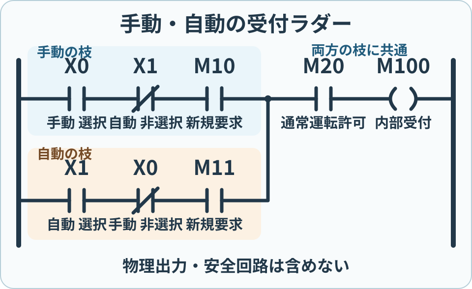
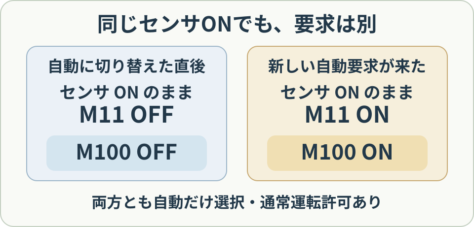

この記事が向いている人
- 手動・自動のどちらの指令が効くか知りたい人
- 図面やラダーで起動できない理由を読み取りたい人
- 停止位置と非常停止の違いを整理したい人
手動・自動切替回路は、人の操作と自動工程のうち、どちらの指令を受け付けるかを選ぶ回路です。選ばれた指令も、運転を許可する条件がそろわなければ先へ進みません。

後輩自動に切り替えたとき、センサがもうONなら、そのまま動くんですか？

先輩表示が「自動」になったことと、新しい起動要求が出たことは別だよ。まず選択、要求、許可の3つに分けて見よう。
手動と自動のどちらを受け付けるか。
選ばれた側から、新しい要求が来たか。
要求を通せる通常の運転条件がそろったか。
たとえば搬送設備では、手動側は押しボタン、自動側は工程からの搬送要求です。センサの「ワークあり」は条件の一つであり、それだけを起動要求とは見なしません。
以下は、手動と自動の選択を別々の信号で読む学習例です。表のON/OFFは論理上の状態であり、端子の配線や実機の動作を示しません。
| 状態 | 手動／自動 | 受け付ける要求 |
|---|---|---|
| 手動 | ON／ | 手動側の新しい要求だけ |
| 停止／ | OFF／ | どちらも受け付けない |
| 自動 | OFF／ | 自動側の新しい要求だけ |
| 不整合 | ON／ | どちらも受け付けない |
停止位置を選んだ場合と、切替の途中などで選択信号が取れていない場合は、表では同じです。この2信号だけでは原因を区別できません。実機の信号名・意味は、設備の仕様とスイッチの型式別接点表で照合します。
「手動を優先」「自動を優先」は、複数の操作元から要求が来たとき、どこへ操作権を渡すかという設備のルールです。停止位置は、どちらにも要求を渡さない状態を設ける考え方です。
設備ごとに決める通常制御の方針。優先側でも停止指令・禁止条件・安全機能を無効にしてはいけません。
中央で両側の要求を受けない例です。中央の表示は、安全停止・電源遮断・実際の停止の証明ではありません。
この例では、切替前から押されたままのボタンや、残った自動要求は新しい要求に数えません。モードが選ばれたことや、許可が戻ったことだけでも起動しません。
3ノッチでも、中間位置の接点や切替途中の接点の重なり方は型式で異なります。表示板の「停止」やノッチ数だけで判断せず、採用機種のメーカー資料を確認します。
以下は内部フラグを観察する机上の例です。 配線図や実機に書き込むプログラムではありません。物理出力・自己保持・安全機能は含めません。
─[ 手動のみ ]─[ 手動の新規要求 ]─。─[ 自動のみ ]─[ 自動の新規要求 ]─。[ 手動枝 または 自動枝 ] ─ [ 通常運転許可 ] ─ ( 内部の受付成立 )。
「新規要求」は、選択が確定し許可がある状態で初めて現れた要求を想定します。切替中や不許可中の要求は保留せず、許可復帰だけで受付フラグをONにしません。新規要求を作る仕組みは図から省いています。
自動側は選ばれても、新規の要求が来ていないので受付はOFF。自動要求が新しく出ても通常運転許可がなければOFFです。選択・要求・許可のどれが足りないかを切り分けられます。

表示と選択信号は一致しているか。両方ON／OFFの意味は仕様にあるか。
どちらから、いつ新しい要求が来たか。以前の要求が残っていないか。
通常の運転許可はそろっていたか。未成立の理由は記録で追えるか。
内部フラグON、出力指令、機械の動作は別。どこまで成立した記録かを分けて読む。
非常停止やガードなどの安全機能は、リスク評価と設備の承認済み設計に従います。停止表示や内部フラグのOFFだけで、機械が停止した、または作業してよいとは判断しません。
公式資料確認日：。実機では採用型式の最新資料と設備の承認済み資料を優先してください。